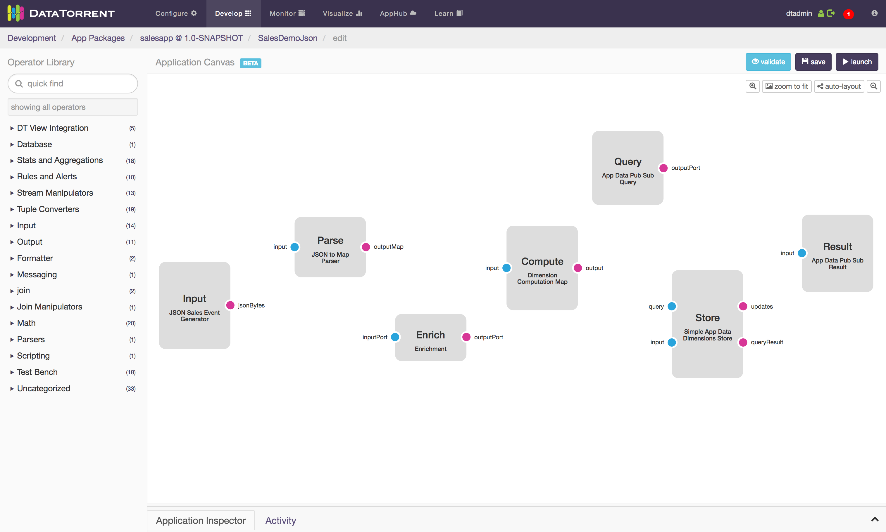
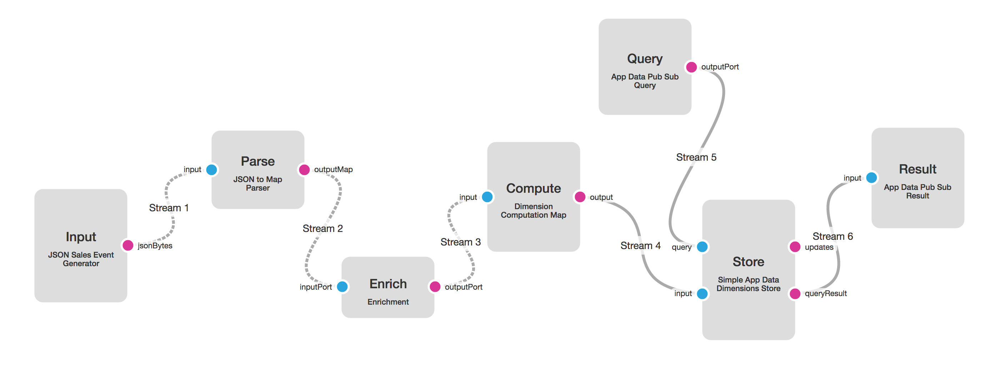
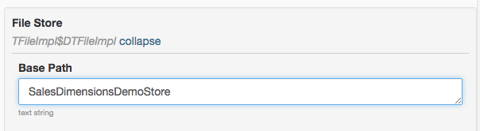
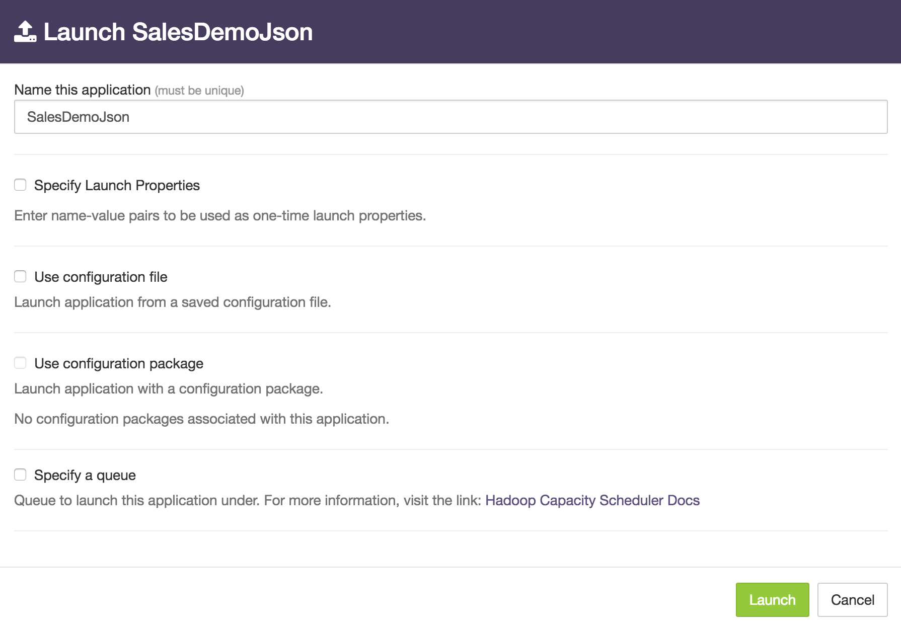
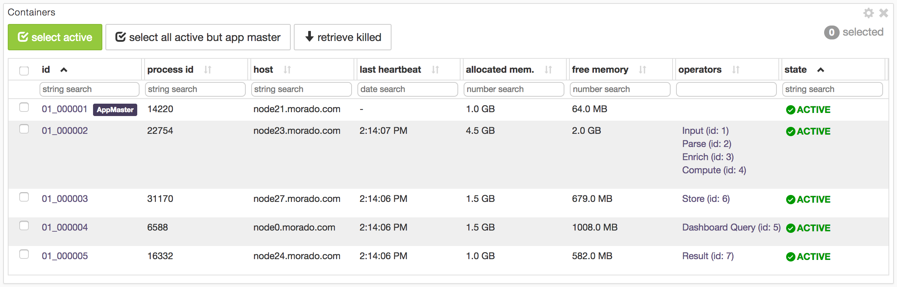

Building the Sales Dimensions application using dtAssemble
The DataTorrent RTS platform supports building new applications using dtAssemble, the Graphical Application Builder which we will use for the Sales Dimensions application. dtAssemble is an easy and intuitive tool for constructing applications, while providing a great visualization of the logical operator connectivity and the application data flow.
Note: You can also find these instructions in the UI console. Click Learn in the menu bar, and then click the first link in the left panel: Transform, Analyze, Alert.
Step 1: Open the Application Builder interface
- On the DataTorrent RTS console, navigate to App Packages.
- Make sure that the DataTorrent Dimensions Demos package is imported (if not, use the Import Demos button to import it).
- Click the green Create new application button, and name the application Sales Dimensions. The Application Canvas window should open. 
Step 2: Add and connect operators
-
Under Operator Library in the left panel, select the following operators and drag them to the Application Canvas. Rename them to the names given in parentheses.
- JSON Sales Event Generator (Input) – This operator generates synthetic sales events and emits them as JSON string bytes.
- JSON to Map Parser (Parse) – This operator transforms JSON data to Java maps for convenience in manipulating the sales data in Java code.
- Enrichment (Enrich) – This operator performs category lookup based on incoming product IDs, and adds the category ID to the output maps.
- Dimension Computation Map (Compute) – This operator performs dimensions computations, also known as cubing, on the incoming data. It pre-computes the sales numbers by region, product category, customer, and sales channel, and all combinations of the above. Having these numbers available in advance, allows for viewing and taking action on any of these combinations in real time.
- Simple App Data Dimensions Store (Store) – This operator stores the computed dimensional information on HDFS in an optimized manner.
- App Data Pub Sub Query (Query) – The dashboard connector for visualization queries.
- App Data Pub Sub Result (Result) – The dashboard connector for visualization data results.
-
To connect the operators, click the output port of each upstream operator, and drag the connector to the input stream of the downstream operator as shown in the diagram below: 
Step 3: Customize application and operator settings
Customize the operators and streams as described in each item below; to do that, click the individual operator or stream and use the Operator Inspector panel on the bottom to edit the operator and stream settings as described in the item:
-
Copy this Sales schema below into the Event Schema JSON field of Input operator, and the Configuration Schema JSON of the Compute and Store operators.
{ "keys": [ {"name":"channel","type":"string","enumValues":["Mobile","Online","Store"]}, {"name":"region","type":"string", "enumValues":["Atlanta","Boston","Chicago","Cleveland","Dallas","Minneapolis", "New York","Philadelphia","San Francisco","St. Louis"]}, {"name":"product","type":"string", "enumValues":["Laptops","Printers","Routers","Smart Phones","Tablets"]}], "timeBuckets":["1m", "1h", "1d"], "values": [ {"name":"sales","type":"double","aggregators":["SUM"]}, {"name":"discount","type":"double","aggregators":["SUM"]}, {"name":"tax","type":"double","aggregators":["SUM"]}], "dimensions": [ {"combination":[]}, {"combination":["channel"]}, {"combination":["region"]}, {"combination":["product"]}, {"combination":["channel","region"]}, {"combination":["channel","product"]}, {"combination":["region","product"]}, {"combination":["channel","region","product"]}] } -
Set the Topic property for Query and Result operators to
SalesDimensionsQueryandSalesDimensionsResultrespectively.Optional: In the Building with Java section, the App Data Pub Sub Query (PubSubWebSocketAppDataQuery) operator was not added to the DAG. Instead, it was embedded into the store operator to avoid query delays which may happen when the operator is blocked upstream. You can achieve the same results in dtAssemble by filling the Embeddable Query Info Provider field of the Store operator with the properties set in the Query operator, and then removing the Query operator.
-
Select the Store operator, and edit the File Store property. Set Base Path value to
SalesDimensionsDemoStore. This sets the HDHT storage path to write dimensions computation results to/user/<username>/SalesDimensionsDemoStoreon HDFS.  - Click the stream, and set the Stream Locality to CONTAINER_LOCAL for all the streams between Input and Compute operators.
Note: Changing stream locality controls which container operators get deployed to, and can lead to significant performance improvements for an application. Once set, the connection will be represented by a dashed line to indicate the new locality setting.
Step 4: Launch the application
Once the application is constructed, and validation checks are satisfied, a launch button will become available at the top left of the Application Canvas window. Clicking this button to open the application launch dialog box. You can use this dialog box to perform additional configuration of the application such as changing its name or modifying properties.
To launch the Sales Dimension application
- Click the launch button at the top left of the application canvas screen.
- Type a name for the application in the Name this application box.
- (Optional) To configure the application using a configuration file, select Use a configuration file checkbox.
- (Optional) To specify individual properties, select Specify Launch Properties checkbox.
- Click Launch.

Once the application is successfully launched, you can check its health and view some runtime statistics using the steps below. Additional details are in the chapter entitled Monitoring the Sales Dimensions Application with dtManage.
- Go to the Sales Dimensions application operations page under the Monitor tab.
- Confirm that the application is launched successfully by validating that the state of the application under the Application Overview section is RUNNING.
- Make sure that all the operators are successfully started under the StramEvents widget.
- Navigate to the physical tab, observe the Input, Parse, Enrich, or Compute operators, and ensure that they are deployed to a single container, because of the stream locality setting of CONTAINER_LOCAL. 
Note: This is one of the many performance improvement techniques available with the DataTorrent platform; in this case eliminating data serialization and networking stack overhead between groups of adjacent operators.